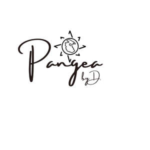

Trade Mark Journal No.2025/047 21 November 2025
UK00004287674 31 October 2025 (14,35)
Mark 1

Mark 2
- Class 14
- Jewelry; Jewellery; Trinkets [jewellery, jewelry (Am.)]; Brooches [jewelry]; Jewelry brooches; Brooches being jewelry; Necklaces [jewelry]; Necklaces [jewellery, jewelry (Am.)]; Necklaces [jewellery]; Ornaments [jewellery, jewelry (Am.)]; Brooches [jewellery, jewelry (Am.)]; Bracelets [jewellery, jewelry (Am.)]; Pearls [jewellery, jewelry (Am.)]; Trinkets [jewelry]; Jewelry (Paste -) [costume jewelry]; Paste jewelry [costume jewelry]; Bracelets [jewelry]; Amulets [jewellery, jewelry (Am.)]; Trinkets [jewellery]; Bracelets [jewellery]; Charms [jewellery, jewelry (Am.)]; Chains [jewellery, jewelry (Am.)]; Jewelry stickpins; Ivory [jewellery, jewelry (Am.)]; Pearls [jewelry]; Medallions [jewellery, jewelry (Am.)]; Ornaments [jewellery]; Rings [jewellery, jewelry (Am.)]; Pins [jewellery, jewelry (Am.)]; Pendants [jewelry]; Cloisonné jewellery [jewelry (Am.)]; Brooches [jewellery]; Jewellery brooches; Lockets [jewellery, jewelry (Am.)]; Jewellery, including imitation jewellery and plastic jewellery; Paste jewellery [costume jewelry (Am.)]; Paste jewellery [costume jewelry [Am.]]; Pendants [jewellery]; Amulets [jewelry]; Jewelry hatpins; Gold thread [jewellery, jewelry (Am.)]; Silver thread [jewellery, jewelry (Am.)]; Costume jewelry; Pearls [jewellery]; Charms [jewelry]; Jewelry charms; Charms for jewelry; Diamond jewelry; Costume jewellery; Lockets [jewelry]; Gold jewellery; Amulets being jewellery; Amulets [jewellery]; Clasps for jewelry; Wristlets [jewellery]; Wire of precious metal [jewellery, jewelry (Am.)]; Charms [jewellery]; Charms for jewellery; Jewellery charms; Rings [jewelry]; Jade [jewellery]; Threads of precious metal [jewellery, jewelry (Am.)]; Jewellery chain of precious metal for necklaces; Decorative brooches [jewellery]; Crucifixes as jewelry; Items of jewellery; Jewellery items; Plastic costume jewellery; Shoe jewelry; Rings being jewellery; Rings [jewellery]; Fashion jewellery; Jewellry; Ivory jewelry; Lockets [jewellery]; Jewelry chains; Chains [jewelry]; Cloisonne jewellery; Platinum jewelry; Jewellery chain of precious metal for bracelets; Clasps for jewellery; Agate as jewellery; Shoe jewellery; Jewelry caskets; Pins being jewelry; Pins [jewelry]; Jewellery caskets; Amber pendants being jewellery; Cloisonné jewelry; Hat jewelry; Gold plated brooches [jewellery]; Pewter jewellery; Jewellery chain of precious metal for anklets; Cameos [jewelry]; Crucifixes as jewellery; Imitation jewellery ornaments; Amberoid pendants being jewellery; Jewellery stones; Jewelry boxes; Precious jewellery; Beads for making jewelry; Hat jewellery; Fake jewellery; Imitation jewelry; Jewellery chains; Chains [jewellery]; Rhinestones for making jewelry; Jewellery in semi-precious metals; Ivory jewellery; Identification bracelets of precious metal [jewelry]; Cabochons for making jewelry; Plastic bracelets in the nature of jewelry; Pins [jewellery]; Pins being jewellery; Leather jewelry boxes; Cloisonné jewellery; Clips of silver [jewellery]; Jewellery for personal adornment; Identification bracelets [jewelry]; Beads for making jewellery; Jewellery chain; Scarf clips being jewelry; Bracelets made of embroidered textile [jewelry]; Jewellery boxes; Jewelry boxes of metal; Jewellery rope chain for necklaces; Jewellery made from gold; Jewellery made from silver; Cabochons for making jewellery; Jewellery in non-precious metals; Dress ornaments in the nature of jewellery; Silver thread [jewelry]; Gold thread jewelry; Gold thread [jewelry].
- Class 35
- Wholesale ordering services; Wholesale services relating to jewelry; Wholesale services in relation to bags; Business management of wholesale and retail outlets; Wholesale services in relation to clothing; Wholesale services in relation to jewellery; Wholesale services relating to clothing; Wholesale services in relation to tableware; Wholesale services in relation to toys; Wholesale services in relation to fabrics; Wholesale services in relation to headgear; Wholesale services in relation to stationery supplies; Wholesale services in relation to cups and glasses; Wholesale services relating to cups and glasses; Online retail services relating to handbags; Wholesale services in relation to fragrancing preparations; Online retail store services relating to clothing; Online retail store services in relation to clothing; Online retail services relating to jewelry; Mail order retail services for clothing accessories; Retail services connected with the sale of clothing and clothing accessories; Online retail services relating to clothing; Retail services in relation to clothing accessories; Retail services relating to jewelry; Mail order retail services for clothing; Retail services in relation to fashion accessories; Mail order retail services connected with clothing accessories; Retail services in relation to bags; Retail services relating to clothing.
Dilek Erbil